Contexte:
GSB est un laboratoire pharmaceutique qui développe des médicaments. Après le développement d'un médicament, des visiteurs sont envoyés vers des praticiens afin de les présenter ces médicaments.
Partie 1 :
Pour cette 1ère partie du projet GSB, le laboratoire désirais mettre à disposition des visiteurs médicaux une application développée en C# leur permettant de présenter les médicaments de GSB aux médecins et autres praticiens de manière attractive.
Réalisations :
- Maquette du site
- Création et installation d'une base de donnée
- Développement de l'application
Fonctionalités de l'application
- Authentification
- Affichage de la liste des médicaments par famille
- La visualisation des Inforomations sur le médicament
- Ajout d'une remarque concernant le médicament
Outils et logiciels utilisés : C#, Sql, Mysql, git
Compétences travaillées :
Au clique sur l'oeil cela met le mot de passe en clair
Si vous avez oublié votre mot de passe, cliquez sur "mot de passe oublié ?"
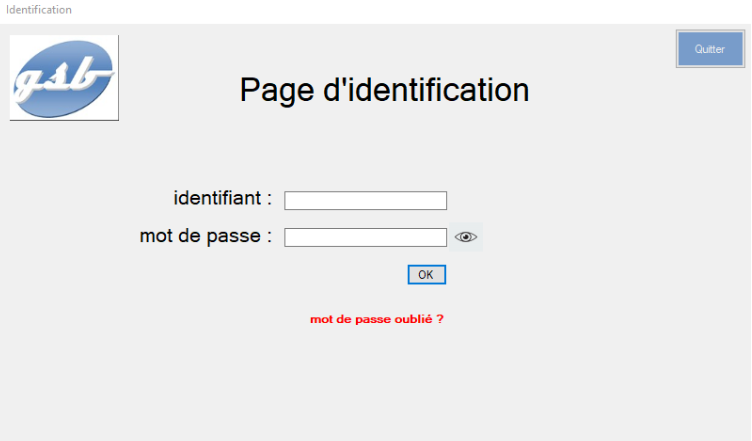
Liste des Groupes de médicament, en fonction du groupe choisi, la liste des
familles de
médicaments
change.
Au clique sur une famille une nouvelle page apparaît
Vous pouvez sélectionner un médicament directement via la barre de recherche
Liste des médicaments en fonction de la famille choisi
Cliquez sur la ligne pour choisir un médicament
Informations sur le médicament choisi
Avec les remarques fait par les différents praticiens
Cliquez sur le bouton "Ajouter Remarque" pour ajouter une remarque
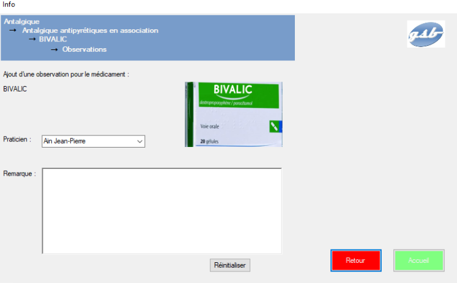
Liste pour sélectionner le praticien
Zone de texte pour écrire la remarque
Bouton pour réinitialiser tous les champs
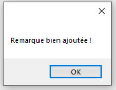
Quand la remarque a été ajoutée, un message apparaît
Partie 2 :
Pour cette 2ème partie du projet GSB, une application web a été développer afin d'enregistrer et suivre les comptes rendus des visites rendu auprès des paraticiens.
Réalisations :
- Maquette du site et diagramme de cas d'utilisation
- Installation d'une base de donnée
- Développement du site
Fonctionalités de l'application
- Authentification sécurisée
- La création d'un compte rendu
- La visualisation d'une liste des comptes rendu
- Modification d'un compte rendu
Outils et logiciels utilisés : HTML, CSS, PHP, Sql,Mysql, JS
Compétences travaillées :
Page d'authentification, au clique sur l'oeil cela met le mot de passe en
clair
Si vous avez oublié votre mot de passe, cliquez sur "mot de passe oublié ?"
Entrez votre mot de passe pour recevoir un mail de réinitialisation
Si vous vous souvenez de votre mot de passe, cliquez sur "Connectez vous "
Liste des comptes-rendus réalisés par le visiteur
Pour ajouter un compte rendu cliquez sur "Ajouter un compte-rendu"
Renseignez les champs voulu
Puis cliquez sur valider pour finaliser la création
Un message sera affiché pour vous notifier de la bonne création du compte-rendu
Detail ou modification d'un compte-rendu
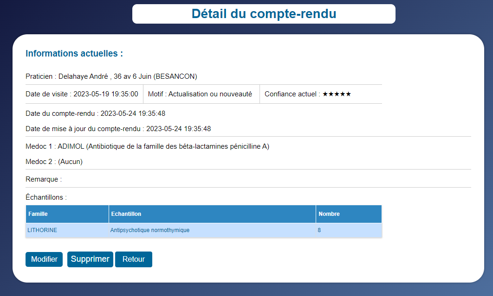Detail d'un compte-rendu, avec des boutons de modification, suppression et de retour
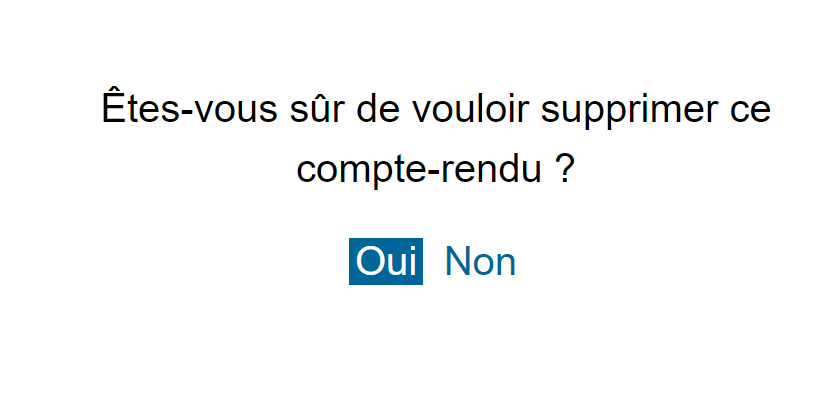Bouton de confirmation de suppression du compte-rendu
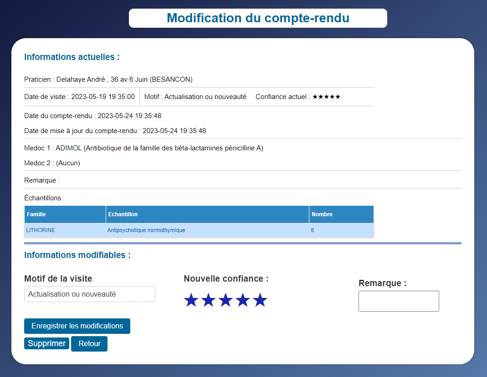Modification d'un compte-rendu, avec des boutons pour enregistrer, supprimer et retour
Affichage d'option pour le profil et l'aide
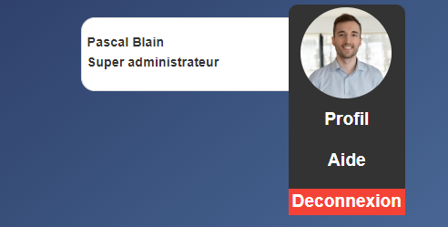Affichage du profil et des statistiques du visiteur
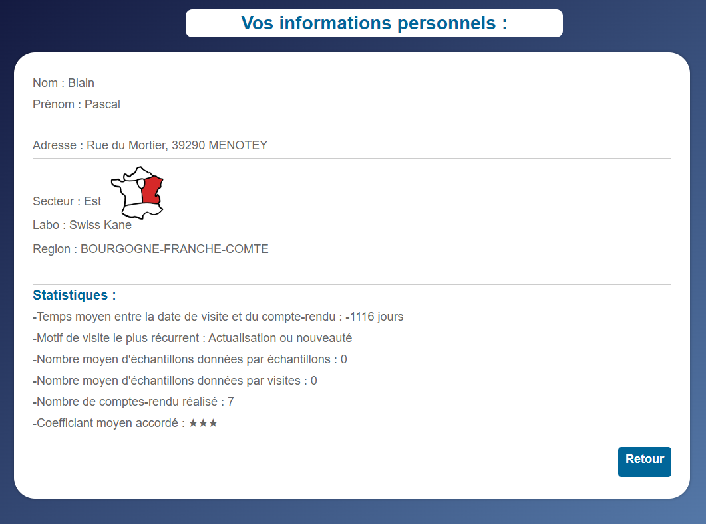Page d'aide, avec un numéro et un mail, et un lien vers un mode d'emploi
Partie 3 :
Pour cette 3ème partie GSB, une application "AppliFrais" a été développé. Cette application devrait permettre ce fois-ci aux visiteurs de renseigner tous les frais de leurs déplacement auprès des visiteur.Parmis ces frais nous avaons des frais forfaitaires(définis par l'entreprise) et les frais hors forfait qui doivent etre justifiés. L'application développé est accessible pour deux catégories de salariés : les comptables et les visiteurs.
Réalisations :
- Maquette du site et diagramme de cas d'utilisation
- Model relationnel
- Développement du site
Fonctionalités de l'application
- Authentification sécurisée
- La création automatique d'une demande de remboursement
- modification d'une demande de remboursement par le visiteur et le comptable(frais forfaitaires)
- Validation de la demande par le comptable
- Cloture automatique d'une demande dès qu'on passe au mois suivant
Outils et logiciels utilisés : HTML, CSS, PHP, Sql,Posgresql, JS, dépôt Git
Compétences travaillées :
Menu d'acceuil avec toutes les informations de l'utilisateur connecté
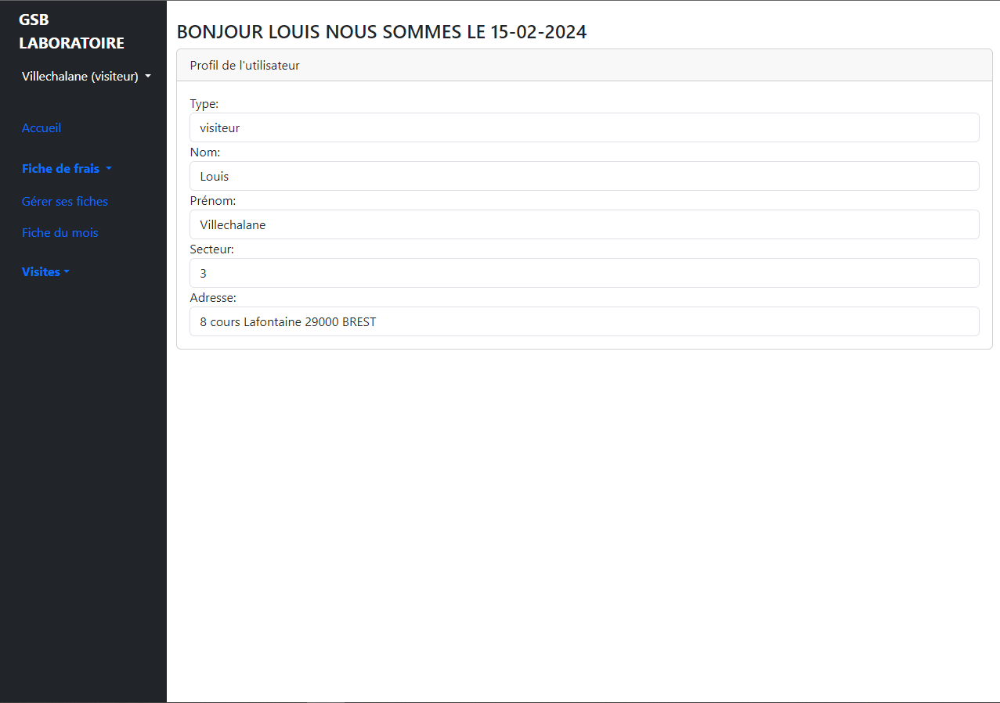Vu sur toutes les fiches de frais de l'utilisateur connecté
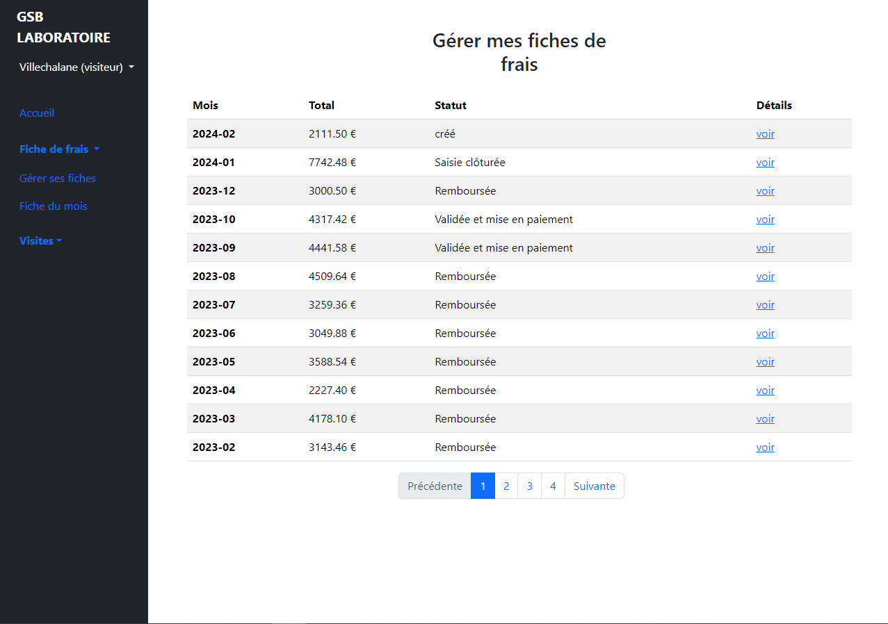Au clic du bouton voir de la photo "Gestion de mes fiches" l'utilisateur fait ça demande en complétant cette fiches de remboursement puis clic sur le bouton envoyer, ce sera au comptable de valider cette fiche ou non
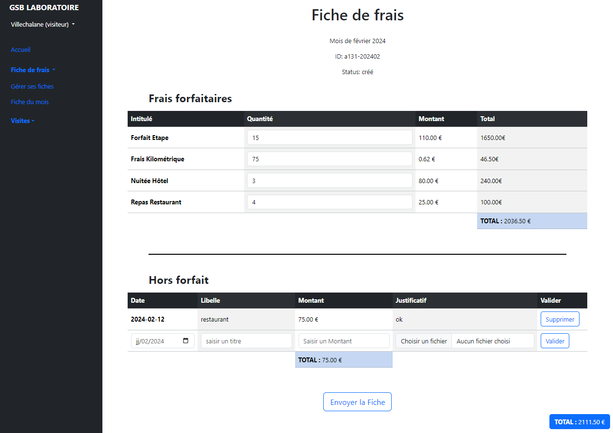Menu d'acceuil avec toutes les informations de l'utilisateur connecté
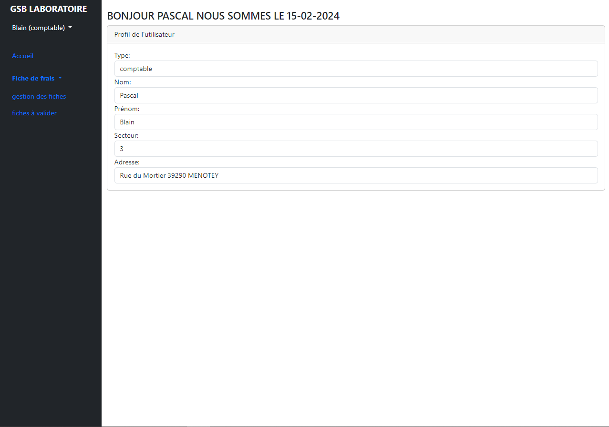Le comptable peut choisir d'accepter ou non le frais hors forfait, si il est en rouge cela veut dire que c'est refuser. Une fois ceci fais il doit valider la fiches
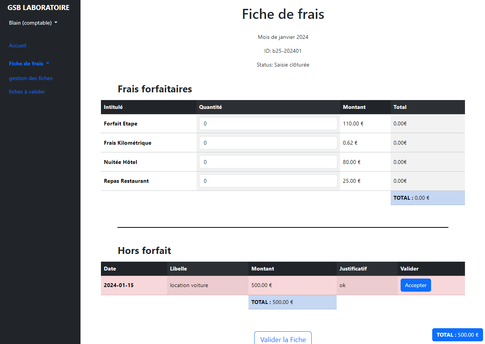 =======

 >>>>>>> 89a9bed026be89164fc07c243d01f2616a49d6bc
>>>>>>> 89a9bed026be89164fc07c243d01f2616a49d6bc